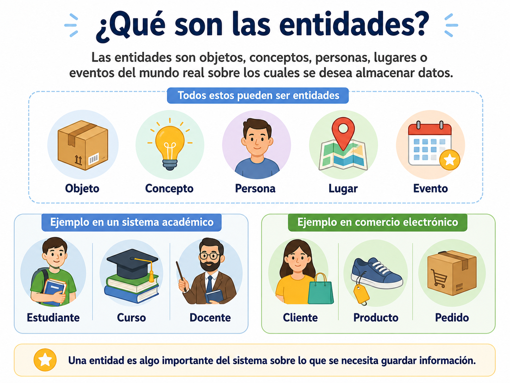

Antes de crear una base de datos es necesario tener claridad sobre qué información se va a almacenar y cómo se relaciona entre sí. Sin embargo, pasar
directamente de una idea de negocio a una tabla en un SGBD suele producir diseños desordenados, con datos duplicados o relaciones mal definidas. Por
esta razón, entre la idea inicial de un sistema y su implementación técnica existe una etapa intermedia fundamental el diseño conceptual, cuya principal
herramienta es el modelo entidad-relación (o modelo E-R).
El modelo entidad-relación permite representar, de forma gráfica y comprensible tanto para el equipo técnico como para el cliente o usuario del sistema,
qué “cosas” importantes existen en un dominio (entidades), qué características las describen (atributos) y cómo se relacionan entre sí (relaciones).
✨ Este modelo fue propuesto en 1976 por Peter Chen y, desde entonces, se ha convertido en el lenguaje universal para el diseño conceptual de
bases de datos, independientemente del SGBD que finalmente se utilice para implementarlas.
Objetivos de aprendizaje
🧠Comprender el propósito del modelo entidad-relación como herramienta de diseño conceptual de bases de datos.
🔍Identificar correctamente entidades y sus atributos a partir de un contexto o requerimiento dado.
📝Reconocer los distintos tipos de atributos (simples, compuestos, monovaluados, multivaluados, derivados y clave) en situaciones aplicadas al desarrollo de software.
🛠️Modelar relaciones básicas entre entidades utilizando la notación estándar del modelo entidad-relación.
Desarrollo del contenido
¿Qué es el modelo entidad-relación?
El modelo entidad-relación (Entity-Relationship Model, E-R) es una técnica de diseño conceptual que permite representar
la estructura lógica de una base de datos mediante tres elementos principales: entidades, atributos y relaciones.
A diferencia del modelo relacional, el modelo E-R no se preocupa por cómo se implementarán físicamente los datos
en un SGBD específico, sino por describir, de forma clara e independiente de la tecnología, qué información es
relevante para el sistema y cómo se relaciona entre sí.
Elementos del modelo E-R
Este modelo se representa gráficamente mediante un diagrama entidad-relación (DER), en el cual
las entidades suelen dibujarse como rectángulos, los atributos como óvalos u ovalados conectados
a su entidad, y las relaciones como rombos que conectan dos o más entidades. Esta representación
visual facilita la comunicación entre el equipo de desarrollo y las personas que conocen el negocio,
pero que no necesariamente tienen conocimientos técnicos de bases de datos.
✨ Reto rápido 1:
Lee el siguiente enunciado: “Una clínica veterinaria necesita registrar información de sus mascotas, de los dueños de las mascotas y de las
citas médicas que se agendan.” En un máximo de tres minutos, subraya mentalmente (o en tu cuaderno) los sustantivos que podrían convertirse
en entidades y los verbos o acciones que podrían convertirse en relaciones. No hay respuestas incorrectas en esta etapa: es una lluvia de ideas.
Entidades
Una entidad es un objeto, concepto, persona, lugar o evento del mundo real (o del dominio del
problema) sobre el cual se desea almacenar información y que puede distinguirse de manera única
de los demás. Por ejemplo, en un sistema académico, ESTUDIANTE, CURSO y DOCENTE son
entidades; en un sistema de comercio electrónico, CLIENTE, PRODUCTO y PEDIDO son
entidades.
En el diagrama E-R, cada entidad representa un conjunto de objetos similares, no un objeto
individual. Es decir, la entidad ESTUDIANTE no representa a un único estudiante, sino a todos
los estudiantes que el sistema gestionará; cada estudiante individual (por ejemplo, “Juan Pérez”)
se conoce como una ocurrencia o instancia de esa entidad.

Las entidades fuertes (o regulares): son aquellas que existen por sí mismas y tienen un identificador
propio que las distingue sin depender de otra entidad, como CLIENTE o PRODUCTO.
Las entidades débiles: no pueden existir sin estar asociadas a otra entidad (llamada entidad fuerte
o propietaria), ya que su identificador depende parcialmente o totalmente de esta; un ejemplo típico es
la entidad CUOTA de un préstamo, que no tiene sentido sin la existencia previa de la entidad
PRÉSTAMO.
✨ Actividad práctica 2
Elige uno de los siguientes contextos:
(a) un gimnasio
(b) una biblioteca
(c) una plataforma de streaming de música
(d) un restaurante con domicilios
En una hoja o en un documento colaborativo, escriban al menos cuatro entidades que ese
sistema necesitaría, clasificando cada una como entidad fuerte o débil, y justificando
brevemente por qué.
Atributos
Un atributo es una característica o propiedad que describe a una entidad. Por ejemplo, la entidad
ESTUDIANTE puede tener los atributos nombre, número de documento, fecha de nacimiento y
correo electrónico. Cada ocurrencia de la entidad tomará un valor específico para cada atributo
(por ejemplo, el estudiante “Juan Pérez” tendrá el valor “juan.perez@correo.edu.co” en el atributo
correo electrónico).
No todos los atributos son iguales; el modelo E-R distingue varios tipos, cuya identificación
correcta es clave para un buen diseño posterior:
Atributo simple:
no puede dividirse en partes más pequeñas con significado propio, como edad o género.
Atributo compuesto:
puede subdividirse en partes más pequeñas que también son atributos
con significado propio, como dirección (que puede dividirse en calle, ciudad y código
postal) o nombre completo (que puede dividirse en nombres y apellidos).
Atributo monovaluado:
Sólo puede tomar un único valor para cada ocurrencia de la entidad, como fecha de nacimiento.
Atributo multivaluado:
puede tomar varios valores simultáneamente para una misma
ocurrencia, como números de teléfono (una persona puede tener más de uno) o correos
electrónicos alternativos.
Atributo derivado:
su valor se puede calcular a partir de otro atributo y, por lo tanto, no
siempre es necesario almacenarlo directamente; por ejemplo, la edad puede derivarse de la
fecha de nacimiento.
Atributo clave (o identificador):
es el atributo (o conjunto de atributos) que permite
distinguir de manera única cada ocurrencia de una entidad, como el número de documento
en la entidad ESTUDIANTE. Este concepto se profundizará en el próximo tema de esta
unidad.
✨ Actividad práctica 3
Completa en tu cuaderno una tabla de dos columnas para la entidad LIBRO de una biblioteca.
En la primera columna, escribe al menos seis atributos que consideres relevantes (por ejemplo:
título, ISBN, autor, año de publicación, número de ejemplares disponibles, géneros). En la
segunda columna, clasifica cada atributo según su tipo (simple, compuesto, monovaluado,
multivaluado, derivado o clave). Intercambia tu tabla con un compañero y revisen juntos si
están de acuerdo con las clasificaciones.
Relaciones
Una relación es una asociación significativa entre dos o más entidades. Las relaciones representan
cómo interactúan las entidades entre sí dentro del dominio del problema. Por ejemplo, entre las
entidades ESTUDIANTE y CURSO puede existir la relación “se matricula en”; entre CLIENTE
y PEDIDO puede existir la relación “realiza”; entre EMPLEADO y DEPARTAMENTO puede
existir la relación “pertenece a”.
Una relación unaria (o recursiva) conecta ocurrencias de una misma entidad, como la
relación “supervisa a” entre empleados de la entidad EMPLEADO;
Una relación binaria conecta dos entidades distintas, como “ESTUDIANTE se matricula en CURSO”,
siendo esta la más común en el diseño de bases de datos;
Una relación ternaria conecta tres entidades simultáneamente,
como “un PROVEEDOR suministra un PRODUCTO a una SUCURSAL”, donde la combinación
específica de las tres entidades aporta información que no podría representarse correctamente con
relaciones binarias por separado.
✨ Actividad práctica 4
Analiza el siguiente caso: una plataforma educativa en línea permite que los DOCENTES
califiquen las TAREAS entregadas por los ESTUDIANTES dentro de un determinado CURSO.
(a) ¿qué entidades identificas?
(b) ¿qué relación o relaciones existen entre ellas?
(c) ¿el grado de esa relación es binario o ternario?
(d) ¿qué atributo(s) le pertenecerían específicamente a la relación (y no a ninguna entidad por separado)?
En una hoja o en un documento colaborativo, escriban al menos cuatro entidades que ese
sistema necesitaría, clasificando cada una como entidad fuerte o débil, y justificando
brevemente por qué.
Tipo de notaciones
Toda la información conceptual descrita anteriormente se plasma visualmente en un diagrama
entidad-relación (DER), utilizando una notación estándar (existen variantes como la notación de
Chen, la notación de Peter Chen extendida y la notación de “pata de gallo” o Crow's Foot, esta
última muy usada en herramientas modernas de modelado).
En la notación clásica de Chen, que
usaremos como referencia en este curso: las entidades se representan con rectángulos; los atributos
se representan con óvalos conectados mediante una línea a su entidad correspondiente (subrayando
el atributo clave); y las relaciones se representan con rombos que conectan las entidades
participantes mediante líneas.
Actividades prácticas
Sopa de Letras: Bases de Datos y SGBD
Arrastra el mouse sobre las letras (horizontal, vertical o diagonal) para encontrar las palabras.
Palabras a encontrar
Relaciona los Conceptos
Selecciona un concepto de la izquierda y luego su definición correcta a la derecha. Si aciertan, se conectan en verde; si no, se indicará que no coinciden.
Evaluación
Responde las 10 preguntas y presiona "Enviar respuestas" para ver tu retroalimentación.
Recursos para profundizar
Para ampliar tu conocimiento sobre ecuaciones y
desigualdades, te recomendamos explorar los siguientes enlaces y documentos:
🚀 El DIAGRAMA CONCEPTUAL del Modelo ENTIDAD-RELACIÓN 👉 TODO lo que necesitas SABER, explicado FÁCIL (Video)